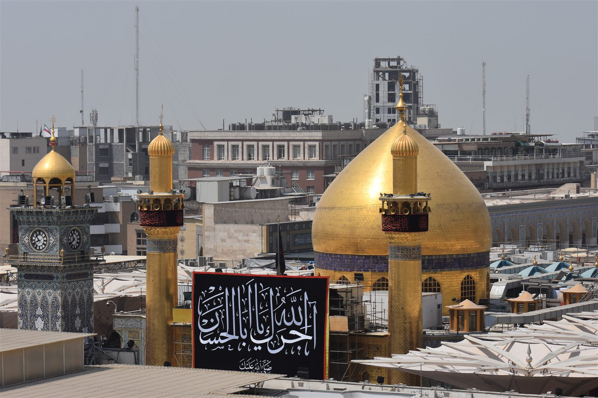

Safety
Safety · 8 min read
Is Iraq Safe to Visit in 2026? A Realistic Guide for UK Tourists
The FCO says one thing. 22 million Arbaeen pilgrims say another. Here is the honest picture, region by region.
Honest answers to the questions people actually ask before visiting Iraq.

Safety · 8 min read
The FCO says one thing. 22 million Arbaeen pilgrims say another. Here is the honest picture, region by region.

Pilgrimage · 7 min read
22 million people walk to Karbala every year. It is bigger than Hajj, open to non-Muslims, and almost unknown outside the Muslim world.

History · 6 min read
Babylon is 40 minutes from Karbala, UNESCO-listed since 2019, and one of the most undervisited ancient sites on earth. Here is what you will actually see.
There is no question too basic or too specific. Send us a message — no sales pitch.
Ask a Question